5 Meta-analysis and publication bias
We are working on it! Stay tuned!
5.1 Why meta-analysis?
Both one-to-one and one-to-many replication studies can be considered as a meta-analysis model. Beyond the original study, replication studies are prospective meta-analyses (data are collected) compared to retrospective meta-analyses where (aggregated) data are collected from the literature. However, from a statistical point of view, the meta-analysis model can be used to formalize replication studies. The purpose of this chapter is to introduce the meta-analysis models with a focus also on the problem of publication bias. We will highlight important features that are relevant for discussing replication studies.
5.1.1 Packages
6 Meta-analysis
6.1 Meta-analysis
- The meta-analysis is a statistical procedure to combine evidence from a group of studies.
- It is usually combined with a systematic review of the literature
- Is somehow the gold-standard approach when we want to summarise and make inferences on a specific research area
6.2 Effect size
To compare results from different studies, we should use common metrics. Frequently meta-analysts use standardized effect sizes. For example the Pearson correlation or the Cohen’s \(d\).
\[ r = \frac{\sum{(x_i - \bar{x})(y_i - \bar{y})}}{\sqrt{\sum{(x_i - \bar{x})^2}\sum{(y_i - \bar{y})^2}}} \]
\[ d = \frac{\bar{x_1} - \bar{x_2}}{s_p} \]
\[ s_p = \sqrt{\frac{(n_1 - 1)s_1^2 + (n_2 - 1)s_2^2}{n_1 + n_2 - 2}} \]
6.3 Effect size
The advantage of standardized effect size is that regardless of the original variable, the interpretation and the scale are the same. For example, the Pearson correlation ranges between -1 and 1 and the Cohen’s \(d\) between \(- \infty\) and \(\infty\) and is interpreted as how many standard deviations the two groups differ.
Code
S <- matrix(c(1, 0.7, 0.7, 1), nrow = 2)
X <- MASS::mvrnorm(100, c(0, 2), S, empirical = TRUE)
par(mfrow = c(1,2))
plot(X, xlab = "x", ylab = "y", cex = 1.3, pch = 19,
cex.lab = 1.2, cex.axis = 1.2,
main = latex2exp::TeX(sprintf("$r = %.2f$", cor(X[, 1], X[, 2]))))
abline(lm(X[, 2] ~ X[, 1]), col = "firebrick", lwd = 2)
plot(density(X[, 1]), xlim = c(-5, 7), ylim = c(0, 0.5), col = "dodgerblue", lwd = 2,
main = latex2exp::TeX(sprintf("$d = %.2f$", lsr::cohensD(X[, 1], X[, 2]))),
xlab = "")
lines(density(X[, 2]), col = "firebrick", lwd = 2)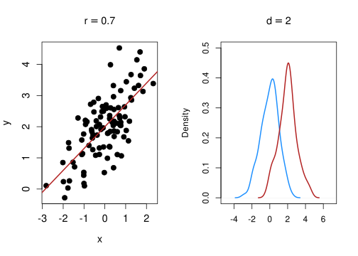
6.4 Effect size sampling variability
For example, there are multiple methods to estimate the Cohen’s \(d\) sampling variability. For example:
\[ V_d = \frac{n_1 + n_2}{n_1 n_2} + \frac{d^2}{2(n_1 + n_2)} \]
Each effect size has a specific formula for the sampling variability. The sample size is usually the most important information. Studies with high sample sizes have low sampling variability.
As the sample size grows and tends to infinity, the sampling variability approaches zero.
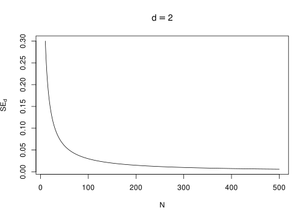
6.5 Notation
Meta-analysis notation is a little bit inconsistent in textbooks and papers. We define here some rules to simplify the work.
- \(k\) is the number of studies
- \(n_j\) is the sample size of the group \(j\) within a study
- \(y_i\) are the observed effect size included in the meta-analysis
- \(\sigma_i^2\) are the observed sampling variance of studies and \(\epsilon_i\) are the sampling errors
- \(\theta\) is the equal-effects parameter (see Equation 6.3)
- \(\delta_i\) is the random-effect (see Equation 7.2)
- \(\mu_\theta\) is the average effect of a random-effects model (see Equation 7.1)
- \(w_i\) are the meta-analysis weights (e.g., see Equation 6.1)
- \(\tau^2\) is the heterogeneity (see Equation 7.2)
- \(\Delta\) is the (generic) population effect size
- \(s_j^2\) is the variance of the group \(j\) within a study
6.6 Extra - Simulating Meta-Analysis
For the examples and plots, I’m going to use simulated data (see Gambarota & Altoè, 2024). We simulate unstandardized effect sizes (UMD) because the computations are easier and the estimator is unbiased (e.g., Viechtbauer, 2005)
More specifically we simulate hypothetical studies where two independent groups are compared:
\[ \Delta = \overline{X_1} - \overline{X_2} \]
\[ SE_{\Delta} = \sqrt{\frac{s^2_1}{n_1} + \frac{s^2_2}{n_2}} \]
With \(X_{1_i} \sim \mathcal{N}(0, 1)\) and \(X_{2_i} \sim \mathcal{N}(\Delta, 1)\)
The main advantage is that, compared to standardized effect size, the sampling variability does not depend on the effect size itself, simplifying the computations.
6.7 Meta-analysis as a (weighted) average
Let’s imagine to have \(k = 10\) studies. The segments are the 95% confidence intervals.
Code
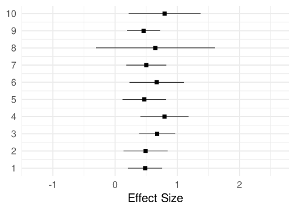
What could you say about the phenomenon?
6.8 Meta-analysis as a (weighted) average
We could say that the average effect is roughly ~0.5 and there is some variability around the average.
Code
avg <- mean(dat$yi)
qf + geom_vline(xintercept = avg, color = "firebrick") +
geom_segment(aes(x = yi, y = id-0.3, xend = avg, yend = id-0.3),
color = "firebrick")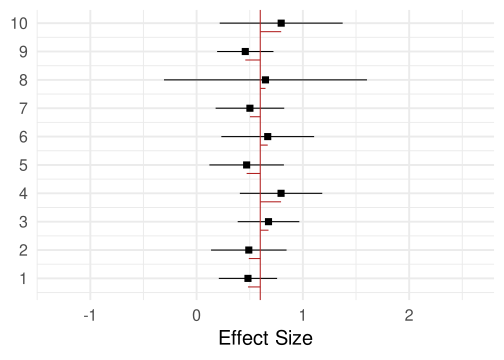
\[ \overline y = \frac{\sum_{i = 1}^k y_i}{k} \]
ybar <- mean(dat$yi)
ybar[1] 0.59895816.9 Meta-analysis as a (weighted) average
The simple average is a good statistic. But some studies are clearly more precise (narrower confidence intervals) than others i.e. the sampling variance is lower.
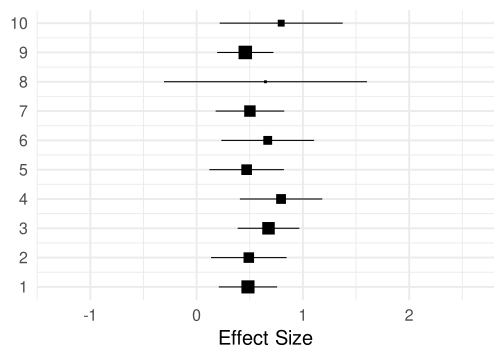
We can compute a weighted average where each study is weighted (\(w_i\)) by the inverse of the variance. This is called inverse-variance weighting. Clearly, a weighted average where all weights are the same is reduced to a simple unweighted average.
\[ \overline y = \frac{\sum_{i = 1}^k y_iw_i}{\sum_{i = 1}^k w_i} \] \[ w_i = \frac{1}{v_i} \tag{6.1}\]
wi <- 1/dat$vi
ywbar <- weighted.mean(dat$yi, wi)
ywbar[1] 0.5602702The value is (not so) different compared to the unweighted version (0.5989581). They are not exactly the same but given that weights are pretty homogeneous the two estimates are similar.
6.10 Meta-analysis as a (weighted) average
What we did is a very simple model but actually is a meta-analysis model. This is commonly known as equal-effects model (or fixed-effect) model.
Code
quick_forest(dat, weigth = TRUE) +
geom_vline(xintercept = ywbar, color = "firebrick") +
ggtitle("Weighted Average")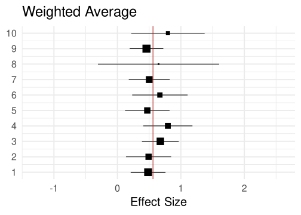
6.11 Equal-effects model (EE)
The EE model is the simplest meta-analysis model. The assumptions are:
- there is a unique, true effect size to estimate \(\theta\)
- each study is a more or less precise estimate of \(\theta\)
- there is no TRUE variability among studies. The observed variability is due to studies that are imprecise (i.e., sampling error)
- assuming that each study has a very large sample size, the observed variability is close to zero.
Formally, we can define the EE model as: \[ y_i = \theta + \epsilon_i \tag{6.2}\]
\[ \epsilon_i \sim \mathcal{N}(0, \sigma^2_i) \tag{6.3}\]
Where \(\sigma^2_i\) is the vector of sampling variabilities of \(k\) studies. This is a standard linear model but with heterogeneous sampling variances.
6.12 Equal-effects model (EE)
A crucial part of the EE model is that, assuming studies with very large sample sizes, \(\epsilon_i\) will tend to 0 and each study is an almost perfect estimation of \(\theta\). Let’s simulate two models, with \(k = 10\) studies and \(n = 30\) and \(n = 500\). The effect size is the same \(0.5\).
Code
dat_low <- sim_studies(10, 0.5, 0, 30, 30)
dat_high <- sim_studies(10, 0.5, 0, 500, 500)
qf_low <- quick_forest(dat_low) +
geom_vline(xintercept = 0.5, color = "firebrick") +
xlim(c(-2, 2)) +
ggtitle(latex2exp::TeX("$n_{1,2} = 30$"))
qf_high <- quick_forest(dat_high) +
geom_vline(xintercept = 0.5, color = "firebrick") +
xlim(c(-2, 2)) +
ggtitle(latex2exp::TeX("$n_{1,2} = 500$"))
plt_high_low <- cowplot::plot_grid(
qf_low,
qf_high
)
plt_high_low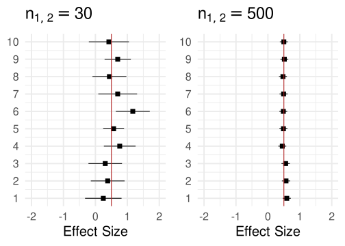
6.13 Equal-effects model (EE)
Clearly, as \(n\) increases, each study is essentially a perfect estimation of \(\theta\) as depicted in the theoretical figure (see slide 6.11).
7 Are the EE assumptions realistic?
7.1 Are the EE assumptions realistic?
The EE model is appropriate if our studies are replications of the same effect. We are assuming that there is no real variability.
However, meta-analysis rarely reports the results of \(k\) exact replicates. It is more common to include studies with the same underlying objective but a roughly similar method.
- people with different ages or other participant-level differences
- different methodology
- …
7.2 Are the EE assumptions realistic?
In this case, even with extremely large studies, our effect could be larger in some conditions or smaller or absent in other conditions.
In other terms, we are assuming that there could be some variability (i.e., heterogeneity) among studies that is independent of the sample size (or more generally the precision)
7.3 Random-effects model (RE)
We can extend the EE model including another source of variability, \(\tau^2\). \(\tau^2\) is the true heterogeneity among studies caused by methodological differences or intrinsic variability in the phenomenon.
Formally we can extend the equation 6.3 as: \[ y_i = \mu_{\theta} + \delta_i + \epsilon_i \tag{7.1}\]
\[ \delta_i \sim \mathcal{N}(0, \tau^2) \tag{7.2}\]
\[ \epsilon_i \sim \mathcal{N}(0, \sigma^2_i) \]
Where \(\mu_{\theta}\) is the average effect size and \(\delta_i\) is the study-specific deviation from the average effect (regulated by \(\tau^2\)).
Given that we extended the EE model equation. Also, the estimation of the average effect needs to be extended. Basically, the RE is still a weighted average but weights need to include also \(\tau^2\).
\[ \overline y = \frac{\sum_{i = 1}^k y_iw^*_i}{\sum_{i = 1}^k w^*_i} \tag{7.3}\]
\[ w^*_i = \frac{1}{v_i + \tau^2} \tag{7.4}\]
The consequence is that weights are different where extremely precise/imprecise studies will impact less the estimation of the average effect under the RE model compared to EE.
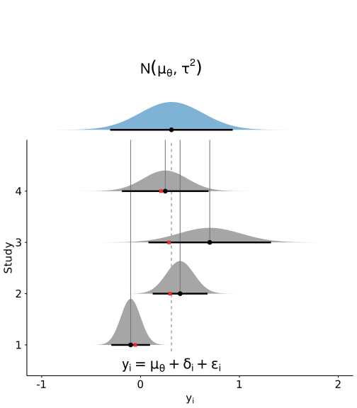
7.4 Random-effects model
The crucial difference with the EE model is that even with large \(n\), only the \(\mu_{\theta} + \delta_i\) are estimated (almost) without error. As long \(\tau^2 \neq 0\) there will be variability in the effect sizes.
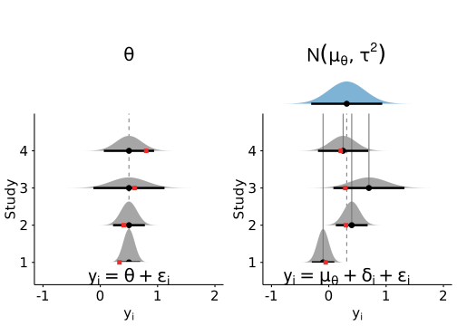
7.5 Random-effects model
Again, we can easily demonstrate this with a simulation. We use the same simulation as slide 6.12 but include \(\tau^2 = 0.2\).
Code
dat_low <- sim_studies(10, 0.5, 0.2, 30, 30)
dat_high <- sim_studies(10, 0.5, 0.2, 500, 500)
qf_low <- quick_forest(dat_low) +
geom_vline(xintercept = 0.5, color = "firebrick") +
xlim(c(-3, 3)) +
ggtitle(latex2exp::TeX("$n_{1,2} = 30$"))
qf_high <- quick_forest(dat_high) +
geom_vline(xintercept = 0.5, color = "firebrick") +
xlim(c(-3, 3)) +
ggtitle(latex2exp::TeX("$n_{1,2} = 500$"))
qf_tau_high_low <- cowplot::plot_grid(
qf_low,
qf_high
)
qf_tau_high_low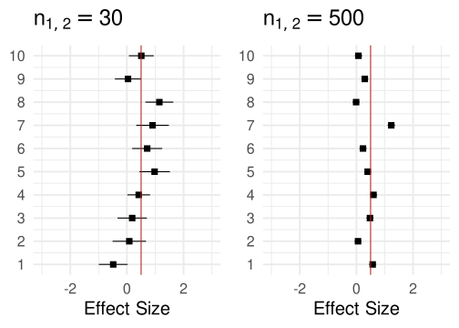
Even with \(n \to \infty\) the observed variance is not reduced as long \(\tau^2 \neq 0\).
7.6 Extra - Simulating Meta-Analysis
For the simulations, we can generate data from effect size and variance sampling distributions1. The unstandardized effect size is a mean difference between independent groups. The sampling distribution is:
\[ y_i \sim \mathcal{N}(\Delta, \frac{1}{n_1} + \frac{1}{n_2}) \]
Where \(\Delta\) is the population level effect size and \(n_{1,2}\) are the sample sizes of the two studies. The sampling variances are generated from a \(\chi^2\) distribution:
\[ \sigma_i^2 \sim \frac{\chi^2_{n_1 + n_2 - 2}}{n_1 + n_2 - 2} (\frac{1}{n_1} + \frac{1}{n_2}) \]
Clearly, we can include \(\tau^2\) to include between-study variability. For an equal-effects model \(\Delta = \theta\) thus the equation is unchanged. For a random-effects model, \(\Delta = \theta_i = \mu_\theta + \delta_i\)
\[ y_i \sim \mathcal{N}(\Delta, \tau^2 + \frac{1}{n_1} + \frac{1}{n_2}) \]
The simulation is implemented in the sim_studies function:
sim_studies <- function(R, mu = 0, tau2 = 0, n0, n1 = NULL){
# check input parameters consistency
if(length(mu) == 1) mu <- rep(mu, R)
if(length(n0) == 1) n0 <- rep(n0, R)
if(length(n1) == 1) n1 <- rep(n1, R)
if(is.null(n1)) n1 <- n0
deltai <- rnorm(R, 0, sqrt(tau2))
mu <- mu + deltai
sim <- mapply(sim_study, mu, n0, n1, SIMPLIFY = FALSE)
sim <- do.call(rbind, sim)
sim <- cbind(id = 1:R, sim)
class(sim) <- c("rep3data", class(sim))
return(sim)
}dat <- sim_studies(R = 10, mu = 0.5, tau2 = 0.2, n0 = 30, n1 = 30)
dat id yi vi sei n0 n1
1 1 0.75044560 0.06779764 0.2603798 30 30
2 2 0.38839910 0.06917802 0.2630172 30 30
3 3 0.56949050 0.06930187 0.2632525 30 30
4 4 -0.09126351 0.11102419 0.3332029 30 30
5 5 0.23076018 0.06089889 0.2467770 30 30
6 6 1.92401709 0.06338803 0.2517698 30 30
7 7 0.11790056 0.07581286 0.2753413 30 30
8 8 -0.04112706 0.06093132 0.2468427 30 30
9 9 0.26563479 0.05939666 0.2437143 30 30
10 10 0.06048275 0.06512356 0.2551932 30 307.7 Heterogeneity
We discussed so far about estimating the average effect (\(\theta\) or \(\mu_\theta\)). But how to estimate the heterogeneity?
There are several estimators for \(\tau^2\)
- Hunter–Schmidt
- Hedges
- DerSimonian–Laird
- Maximum-Likelihood
- Restricted Maximum-Likelihood (REML)
We will mainly use the REML estimator. See Viechtbauer (2005) and Veroniki et al. (2016) for more details.
7.8 The Q Statistics2
The Q statistics is used to make statistical inferences on the heterogeneity. Can be considered as a weighted sum of squares:
\[ Q = \sum^k_{i = 1}w_i(y_i - \hat \mu)^2 \]
Where \(\hat \mu\) is EE estimation (regardless of \(\tau^2 \neq 0\)) and \(w_i\) are the inverse-variance weights. Note that in the case of \(w_1 = w_2 ... = w_i\), Q is just a standard sum of squares (or deviance).
7.9 The Q Statistics
- Given that we are summing up squared distances, they should be approximately \(\chi^2\) with \(df = k - 1\). In case of no heterogeneity (\(\tau^2 = 0\)) the observed variability is caused by sampling error only. The expected value of the \(\chi^2\) is just the degrees of freedom (\(df = k - 1\)).
- In case of \(\tau^2 \neq 0\), the expected value is \(k - 1 + \lambda\) where \(\lambda\) is a non-centrality parameter.
- In other terms, if the expected value of \(Q\) exceeds the expected value assuming no heterogeneity, we have evidence that \(\tau^2 \neq 0\).
7.10 The Q Statistics
Let’s try a more practical approach. We simulate a lot of meta-analysis with and without heterogeneity and we check the Q statistics.
Code
get_Q <- function(yi, vi){
wi <- 1/vi
theta_ee <- weighted.mean(yi, wi)
sum(wi*(yi - theta_ee)^2)
}
k <- 30
n <- 30
tau2 <- 0.1
nsim <- 1e4
Qs_tau2_0 <- rep(0, nsim)
Qs_tau2 <- rep(0, nsim)
res2_tau2_0 <- vector("list", nsim)
res2_tau2 <- vector("list", nsim)
for(i in 1:nsim){
dat_tau2_0 <- sim_studies(R = 30, mu = 0.5, tau2 = 0, n0 = n, n1 = n)
dat_tau2 <- sim_studies(R = 30, mu = 0.5, tau2 = tau2, n0 = n, n1 = n)
theta_ee_tau2_0 <- weighted.mean(dat_tau2_0$yi, 1/dat_tau2_0$vi)
theta_ee <- weighted.mean(dat_tau2$yi, 1/dat_tau2$vi)
res2_tau2_0[[i]] <- dat_tau2_0$yi - theta_ee_tau2_0
res2_tau2[[i]] <- dat_tau2$yi - theta_ee
Qs_tau2_0[i] <- get_Q(dat_tau2_0$yi, dat_tau2_0$vi)
Qs_tau2[i] <- get_Q(dat_tau2$yi, dat_tau2$vi)
}
df <- k - 1
par(mfrow = c(2,2))
hist(Qs_tau2_0, probability = TRUE, ylim = c(0, 0.08), xlim = c(0, 150),
xlab = "Q",
main = latex2exp::TeX("$\\tau^2 = 0$"))
curve(dchisq(x, df), 0, 100, add = TRUE, col = "firebrick", lwd = 2)
hist(unlist(res2_tau2_0), probability = TRUE, main = latex2exp::TeX("$\\tau^2 = 0$"), ylim = c(0, 2),
xlab = latex2exp::TeX("$y_i - \\hat{\\mu}$"))
curve(dnorm(x, 0, sqrt(1/n + 1/n)), add = TRUE, col = "dodgerblue", lwd = 2)
hist(Qs_tau2, probability = TRUE, ylim = c(0, 0.08), xlim = c(0, 150),
xlab = "Q",
main = latex2exp::TeX("$\\tau^2 = 0.1$"))
curve(dchisq(x, df), 0, 100, add = TRUE, col = "firebrick", lwd = 2)
hist(unlist(res2_tau2), probability = TRUE, main = latex2exp::TeX("$\\tau^2 = 0.1$"), ylim = c(0, 2),
xlab = latex2exp::TeX("$y_i - \\hat{\\mu}$"))
curve(dnorm(x, 0, sqrt(1/n + 1/n)), add = TRUE, col = "dodgerblue", lwd = 2)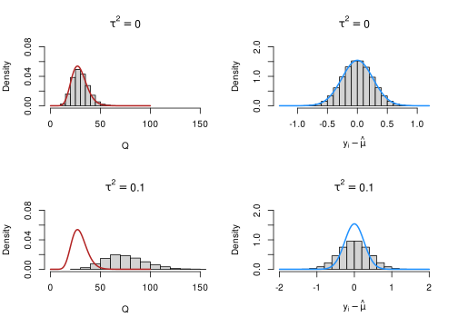
7.11 The Q Statistics
Let’s try a more practical approach. We simulate a lot of meta-analysis with and without heterogeneity and we check the Q statistics.
- clearly, in the presence of heterogeneity, the expected value of the Q statistics is higher (due to \(\lambda\)) and also residuals are larger.
- we can calculate a p-value for deviation from the \(\tau^2 = 0\) case as evidence agaist the absence of heterogeneity
7.12 Estimating \(\tau^2\)
The Q statistics are rarely used to directly represent the heterogeneity. The raw measure of heterogeneity is \(\tau^2\). The REML (restricted maximum likelihood) estimator is often used.
\[ \hat \tau^2 = \frac{\sum_{i = 1}^k w_i^2[(y_i - \hat \mu)^2 - \sigma^2_i]}{\sum_{i = 1}^k w_i^2} + \frac{1}{\sum_{i = 1}^k w_i} \]
Where \(\hat{\mu}\) is the weighted average (i.e., maximum likelihood estimation, see Equation 7.3 and Equation 7.4).
7.13 \(\tau^2\) as heterogeneity measure
- \(\tau^2\) is the direct measure of heterogeneity in meta-analysis
- it is interpreted as a standard deviation (or variance) of the distribution of true effects
- a phenomenon associated with an higher \(\tau^2\) is interpreted as more variable
7.14 \(\tau^2\) as heterogeneity measure
Code
# We generate 1e5 values from a random-effect model with certain parameters and different tau2 values
# and check the expected distribution of effect sizes
n <- 100
k <- 1e5
tau2 <- c(0, 0.1, 0.2, 0.5)
dats <- lapply(tau2, function(x) sim_studies(k, 0.5, x, n, n))
names(dats) <- tau2
dat <- bind_rows(dats, .id = "tau2")
dat$tau2 <- factor(dat$tau2)
dat$tau2 <- factor(dat$tau2, labels = latex2exp::TeX(sprintf("$\\tau^2 = %s$", levels(dat$tau2))))
dat |>
ggplot(aes(x = yi, y = after_stat(density))) +
geom_histogram(bins = 50) +
geom_vline(xintercept = 0.5, lwd = 0.5, color = "firebrick") +
facet_wrap(~tau2, labeller = label_parsed) +
ggtitle(latex2exp::TeX("Expected $y_i$ distribution, $d = 0.5$, $n_{1,2} = 100$")) +
xlab(latex2exp::TeX("$y_i$"))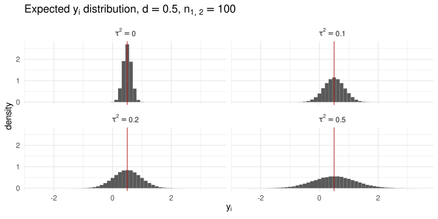
7.15 \(I^2\) (Higgins & Thompson, 2002)
We have two sources of variability in a random-effects meta-analysis, the sampling variabilities \(\sigma_i^2\) and \(\tau^2\). We can use the \(I^2\) to express the interplay between the two. \[ I^2 = 100\% \times \frac{\hat{\tau}^2}{\hat{\tau}^2 + \tilde{v}} \tag{7.5}\]
\[ \tilde{v} = \frac{(k-1) \sum w_i}{(\sum w_i)^2 - \sum w_i^2}, \]
Where \(\tilde{v}\) is the typical sampling variability. \(I^2\) is interpreted as the proportion of total variability due to real heterogeneity (i.e., \(\tau^2\))
7.16 \(I^2\) (Higgins & Thompson, 2002)3
Note that we can have the same \(I^2\) in two completely different meta-analyses. A high \(I^2\) does not represent high heterogeneity. Let’s assume to have two meta-analyses with \(k\) studies and small (\(n = 30\)) vs large (\(n = 500\)) sample sizes.
Let’s solve Equation 7.5 for \(\tau^2\) (using filor::tau2_from_I2()) and we found that the same \(I^2\) can be obtained with two completely different \(\tau^2\) values:
n_1 <- 30
vi_1 <- 1/n_1 + 1/n_1
tau2_1 <- filor::tau2_from_I2(0.8, vi_1)
tau2_1[1] 0.2666667n_2 <- 500
vi_2 <- 1/n_2 + 1/n_2
tau2_2 <- filor::tau2_from_I2(0.8, vi_2)
tau2_2[1] 0.0167.17 \(I^2\) (Higgins & Thompson, 2002)
n_1 <- 30
vi_1 <- 1/n_1 + 1/n_1
tau2_1 <- filor::tau2_from_I2(0.8, vi_1)
tau2_1[1] 0.2666667n_2 <- 500
vi_2 <- 1/n_2 + 1/n_2
tau2_2 <- filor::tau2_from_I2(0.8, vi_2)
tau2_2[1] 0.016In other terms, the \(I^2\) can be considered a good index of heterogeneity only when the total variance (\(\tilde{v} + \tau^2\)) is the same.
8 Meta-analysis in R
8.1 Meta-analysis in R
In R there are several packages to conduct a meta-analysis. For me, the best package is metafor (Viechtbauer, 2010). The package supports all steps in meta-analysis providing also amazing documentation:
8.2 Equal-effects model in R
Disclaimer: we are omitting the important part of collecting the information from published studies and calculating the (un)standardized effect sizes. Clerly this part is highly dependent on the actual dataset.
There are a few useful resources:
- Chapters 1-9 from Borestein et al. (2009)
- The
metafor::escalc()function that calculate all effects size and report an useful documentation
8.3 Equal-effects model in R
We can simulate an EE dataset (i.e., \(\tau^2 = 0\)) and then fit the model with metafor:
theta <- 0.3
k <- 30 # number of studies
n <- round(runif(k, 10, 60)) # random sample sizes with a plausible range
dat <- sim_studies(R = k, mu = theta, tau2 = 0, n0 = n, n1 = n)
dat$n <- n # n1 and n2 are the same, put only one
head(dat) id yi vi sei n0 n1 n
1 1 0.264031340 0.06389272 0.2527701 33 33 33
2 2 -0.029531043 0.05680806 0.2383444 39 39 39
3 3 0.254081428 0.04534763 0.2129498 36 36 36
4 4 0.183659546 0.04288677 0.2070912 45 45 45
5 5 0.344516887 0.08746235 0.2957403 26 26 26
6 6 -0.006048535 0.09098506 0.3016373 20 20 208.4 Equal-effects model in R
We can start with some summary statistics:
# unweighted summary statistics for the effect
summary(dat$yi) Min. 1st Qu. Median Mean 3rd Qu. Max.
-0.2531 0.1747 0.2685 0.3139 0.4641 0.7874 # unweighted summary statistics for the variances
summary(dat$vi) Min. 1st Qu. Median Mean 3rd Qu. Max.
0.02815 0.04648 0.06014 0.07152 0.09010 0.15128 # sample sizes
summary(dat$n) # n0 and n1 are the same Min. 1st Qu. Median Mean 3rd Qu. Max.
13.00 26.00 30.50 32.40 38.75 58.00 8.5 Equal-effects model in R
Then we can use the metafor::rma.uni() function (or more simply metafor::rma()) providing the effect size, variances, and method = "EE" to specify that we are fitting an equal-effects model.
Equal-Effects Model (k = 30)
logLik deviance AIC BIC AICc
2.6063 21.7886 -3.2125 -1.8113 -3.0697
I^2 (total heterogeneity / total variability): 0.00%
H^2 (total variability / sampling variability): 0.75
Test for Heterogeneity:
Q(df = 29) = 21.7886, p-val = 0.8288
Model Results:
estimate se zval pval ci.lb ci.ub
0.3117 0.0444 7.0231 <.0001 0.2247 0.3986 ***
---
Signif. codes: 0 '***' 0.001 '**' 0.01 '*' 0.05 '.' 0.1 ' ' 18.6 Equal-effects model in R
We can easily show that the results are the same as performing a simple weighted average using study-specific variances as weight:
wi <- 1/dat$vi
weighted.mean(dat$yi, wi)[1] 0.3116503summary(fit_ee)
Equal-Effects Model (k = 30)
logLik deviance AIC BIC AICc
2.6063 21.7886 -3.2125 -1.8113 -3.0697
I^2 (total heterogeneity / total variability): 0.00%
H^2 (total variability / sampling variability): 0.75
Test for Heterogeneity:
Q(df = 29) = 21.7886, p-val = 0.8288
Model Results:
estimate se zval pval ci.lb ci.ub
0.3117 0.0444 7.0231 <.0001 0.2247 0.3986 ***
---
Signif. codes: 0 '***' 0.001 '**' 0.01 '*' 0.05 '.' 0.1 ' ' 18.7 Random-effects model in R
The syntax for a random-effects model is the same, we just need to use method = "REML" (or another \(\tau^2\) estimation method)
Random-Effects Model (k = 30; tau^2 estimator: REML)
logLik deviance AIC BIC AICc
2.1107 -4.2214 -0.2214 2.5132 0.2401
tau^2 (estimated amount of total heterogeneity): 0 (SE = 0.0145)
tau (square root of estimated tau^2 value): 0
I^2 (total heterogeneity / total variability): 0.00%
H^2 (total variability / sampling variability): 1.00
Test for Heterogeneity:
Q(df = 29) = 21.7886, p-val = 0.8288
Model Results:
estimate se zval pval ci.lb ci.ub
0.3117 0.0444 7.0231 <.0001 0.2247 0.3986 ***
---
Signif. codes: 0 '***' 0.001 '**' 0.01 '*' 0.05 '.' 0.1 ' ' 18.8 Random-effects model in R
We can easily compare the models using the compare_rma() function:
filor::compare_rma(fit_ee, fit_re) |>
round(5) fit_ee fit_re
b 0.31165 0.31165
se 0.04437 0.04437
zval 7.02314 7.02314
pval 0.00000 0.00000
ci.lb 0.22468 0.22468
ci.ub 0.39862 0.39862
I2 0.00000 0.00000
tau2 0.00000 0.00000What do you think? Are there differences between the two models? What could be the reasons?
8.9 Random-effects model in R
Clearly, given that we simulated \(\tau^2 = 0\) the RE model results is very close (if not equal) to the EE model. We can simulate a RE model:
tau2 <- 0.2
dat <- sim_studies(R = k, mu = theta, tau2 = tau2, n0 = n, n1 = n)
fit_re <- rma(yi, vi, method = "REML", data = dat)
summary(fit_re)
Random-Effects Model (k = 30; tau^2 estimator: REML)
logLik deviance AIC BIC AICc
-26.0587 52.1174 56.1174 58.8520 56.5789
tau^2 (estimated amount of total heterogeneity): 0.2910 (SE = 0.0954)
tau (square root of estimated tau^2 value): 0.5394
I^2 (total heterogeneity / total variability): 82.02%
H^2 (total variability / sampling variability): 5.56
Test for Heterogeneity:
Q(df = 29) = 180.0265, p-val < .0001
Model Results:
estimate se zval pval ci.lb ci.ub
0.3626 0.1103 3.2888 0.0010 0.1465 0.5787 **
---
Signif. codes: 0 '***' 0.001 '**' 0.01 '*' 0.05 '.' 0.1 ' ' 18.10 Forest Plot
The most common plot to represent meta-analysis results is the forest plot:
forest(fit_re)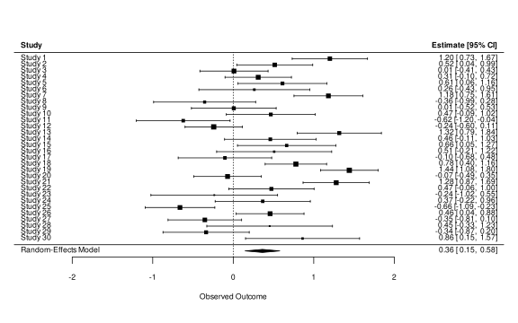
8.11 Forest Plot
The most common plot to represent meta-analysis results is the forest plot:
- The
xaxis represent the effect size - The
yaxis represent the studies - The
size of the squareis the weight of that study (\(w_i = 1/\sigma_i^2\)) - The
intervalis the 95% confidence interval - The
diamondis the estimated effect and the 95% confidence interval
8.12 Forest Plot
It is also common to plot studies ordering by the size of the effect, showing asymmetries or other patterns:
forest(fit_re, order = "yi")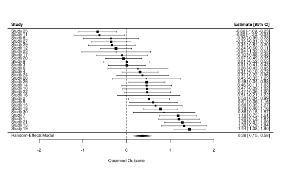
9 Multilab Studies
9.1 Multilab Studies
So far we reasoned about collecting published studies and conducting a meta-analysis. Despite pooling evidence from multiple studies there are several limitations:
- publication bias
- a small number of studies (\(k\)) thus low power and low estimation precision
- the estimated \(\tau^2\) could be high because the methodological heterogeneity is high –> each research group use a different methodology
9.2 Multilab Studies
With multi-lab studies we define a new data collection where different research groups conduct an experiment with a similar (or the exact same) methodology. In this way, we can:
- eliminate the publication bias
- calibrate the number of studies (\(k\)) and observations (\(n\)) according to our criteria (power, precision, etc.)
9.3 Multilab Studies and Meta-analysis
From a statistical point of view, the only difference is the source of the data (planned and collected vs collected from the literature). In fact, a multi-lab study can be analyzed also using standard meta-analysis tools.
When interpreting the results we could highlight some differences:
- \(\tau^2\) in standard meta-analysis is considered the true variability of the phenomenon. In multilab studies should be low or close to zero.
- In standard meta-analysis, we could try to explain \(\tau^2\) using meta-regression (e.g., putting the average participant age as a predictor) while in multilab studies we could plan to use the same age thus removing the age effect.
9.4 Extra - Planning a Multilab Study
Let’s imagine planning a multi-lab study with the same setup as the previous meta-analysis. We are not collecting data from the literature but we want to know the number of studies \(k\) that we need to achieve e.g. a good statistical Power.
We define power as the probability of correctly rejecting the null hypothesis of no effect when the effect is actually present.
9.5 Extra - Planning a Multilab Study
We can do a Power analysis using Monte Carlo simulations:
- simulate a meta-analysis given a set of parameters
- fit the meta-analysis model
- extract the p-value
- repeat steps 1-3 a lot of times e.g. 10000
- count the number of significant (e.g., \(\leq \alpha\)) p-values
9.6 Extra - Planning a Multilab Study
We can implement a simple simulation as:
library(metafor)
library(ggplot2)
# set.seed(2023)
k <- seq(10, 100, 10)
n <- seq(10, 100, 20)
es <- 0.3
tau2 <- 0.1
alpha <- 0.05
nsim <- 1e3
sim <- tidyr::expand_grid(k, n, es, tau2)
sim$power <- 0
# handle errors, return NA
srma <- purrr::possibly(rma, otherwise = NA)
for(i in 1:nrow(sim)){ # iterate for each condition
pval <- rep(0, nsim)
for(j in 1:nsim){ # iterate for each simulation
dat <- sim_studies(k = sim$k[i],
theta = sim$es[i],
tau2 = sim$tau2[i],
n0 = sim$n[i],
n1 = sim$n[i])
fit <- srma(yi, vi, data = dat, method = "REML")
pval[j] <- fit$pval
}
sim$power[i] <- mean(pval <= alpha) # calculate power
filor::pb(nrow(sim), i)
}
saveRDS(sim, here("04-meta-analysis/objects/power-example.rds"))9.7 Extra - Planning a Multilab Study
Then we can plot the results:
Code
sim <- readRDS(here("chapters/objects/power-example.rds"))
title <- "$\\mu_\\theta = 0.3$, $\\tau^2 = 0.1$, $\\alpha = 0.05"
sim |>
ggplot(aes(x = k, y = power, group = n, color = factor(n))) +
geom_line(lwd = 1) +
xlab("Number of Studies (k)") +
ylab("Power") +
labs(color = "Sample Size") +
theme(legend.position = "bottom") +
ggtitle(latex2exp::TeX(title))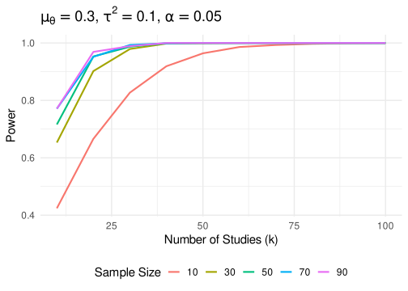
9.8 Extra - Planning a Multilab Study
This is a flexible way to simulate and plan a multi-lab study:
- We could prefer increasing \(k\) (i.e., the research units) and limiting \(n\) thus reducing the effort for each lab. The downside are difficulties in managing multiple labs, increased dropout rate, and difficulty in reaching the planned \(k\)
- We could prefer increasing \(n\) and limiting \(k\). Each lab needs to put more resources but the overall project could be easier.
- We could try to estimate a cost function according to several parameters and find the best trade-off as implemented in Hedges & Schauer (2021)
10 Publication Bias (PB)
11 What do you think about PB? What do you know? Causes? Remedies?
11.1 Publication Bias (PB)
The PB is one of the most problematic aspects of meta-analysis. Essentially the probability of publishing a paper (~and thus including into the meta-analysis) is not the same regardless the result. Clearly we could include also the gray literature to mitigate the problem.
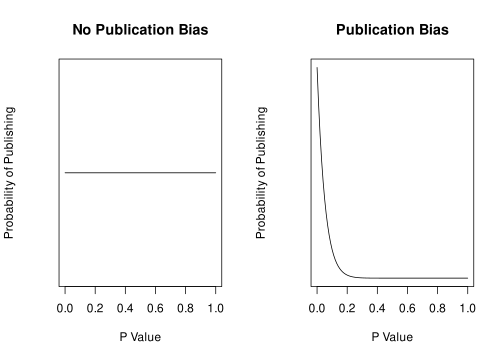
11.2 Publication Bias Disclaimer!
We cannot (completely) solve the PB using statistical tools. The PB is a problem related to the publishing process and publishing incentives (significant results are more catchy and easy to explain).
- pre-registrations, multi-lab studies, etc. can (almost) completely solve the problem of filling the literature with unbiased studies (at least from the publishing point of view)
- there are statistical tools to detect, estimate, and correct for the publication bias. As with every statistical method, they are influenced by statistical assumptions, number of studies and sample size, heterogeneity, etc.
11.3 Publication Bias (PB) - The Big Picture4
11.4 Publication Bias (PB) - Funnel Plot
The first tool is called funnel plot. This is a visual tool to check the presence of asymmetry that could be caused by publication bias. If meta-analysis assumptions are respected, and there is no publication bias:
- effects should be normally distributed around the average effect
- more precise studies should be closer to the average effect
- less precise studies could be equally distributed around the average effect
Let’s simulate a lot of studies to show:
11.5 Publication Bias (PB) - Funnel Plot
Let’s plot the distribution of the data:
hist(dat$yi)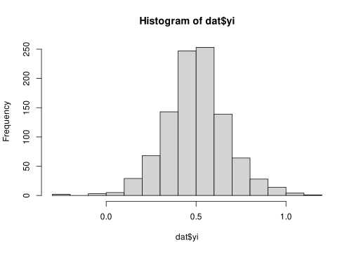
The distribution is clearly normal and centered on the true simulated value. Now let’s add the precision (in this case standard error thus \(\sqrt{\sigma_i^2}\)) on the y-axis.
11.6 Publication Bias (PB) - Funnel Plot
Note that the y axis is reversed so high-precise studies (\(\sqrt{\sigma_i^2}\) close to 0) are on top.
11.7 Publication Bias (PB) - Funnel Plot
The plot assumes the typical funnel shape and there are no missing spots at the bottom. The presence of missing spots is a potential index of publication bias.
11.8 Publication Bias (PB) - Funnel Plot
The plot assumes the typical funnel shape and there are no missing spots at the bottom. The presence of missing spots is a potential index of publication bias.
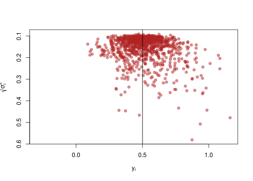
11.9 Robustness to PB - Fail-safe N
The Fail-safe N (Rosenthal, 1979) idea is very simple. Given a meta-analysis with a significant result (i.e., \(p \leq \alpha\)). How many null studies (i.e., \(\hat \theta = 0\)) do I need to obtain \(p > \alpha\)?
metafor::fsn(yi, vi, data = dat)
Fail-safe N Calculation Using the Rosenthal Approach
Observed Significance Level: <.0001
Target Significance Level: 0.05
Fail-safe N: 438768411.10 Robustness to PB - Fail-safe N
There are several criticisms to the Fail-safe N procedure:
- is not actually detecting the PB but suggesting the required PB size to remove the effect. A very large N suggests that even with PB, it is unlikely that the results could be completely changed by actually reporting null studies
- Orwin (1983) proposed a new method for calculating the number of studies required to reduce the effect size to a given target
- Rosenberg (2005) proposed a method similar to Rosenthal (1979) but combining the (weighted) effect sizes and not the p-values.
11.11 Detecting PB - Egger Regression
A basic method to test the funnel plot asymmetry is using a Egger regression test. Basically, we calculate the relationship between \(y_i\) and \(\sqrt{\sigma^2_i}\). In the absence of asymmetry, the line slope should be not different from 0.
We can use the metafor::regtest() function:
egger <- regtest(fit)
egger
Regression Test for Funnel Plot Asymmetry
Model: fixed-effects meta-regression model
Predictor: standard error
Test for Funnel Plot Asymmetry: z = -0.0927, p = 0.9262
Limit Estimate (as sei -> 0): b = 0.5018 (CI: 0.4719, 0.5317)11.12 Publication Bias (PB) - Egger Regression
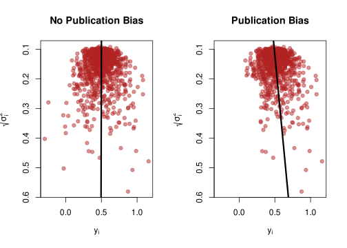
This is a standard (meta) regression thus the number of studies, the precision of each study, and heterogeneity influence the reliability (power, type-1 error rate, etc.) of the procedure.
11.13 Correcting PB - Trim and Fill
The Trim and Fill method (Duval & Tweedie, 2000) is used to impute the hypothetical missing studies according to the funnel plot and recompute the meta-analysis effect. Shi and Lin (Shi & Lin, 2019) provide an updated overview of the method with some criticisms.
Let’s simulate again a publication bias with \(k = 100\) studies:
11.14 Correcting PB - Trim and Fill
Now we can use the metafor::trimfill() function:
taf <- metafor::trimfill(fit)
taf
Estimated number of missing studies on the left side: 0 (SE = 5.8460)
Random-Effects Model (k = 100; tau^2 estimator: REML)
tau^2 (estimated amount of total heterogeneity): 0.0448 (SE = 0.0093)
tau (square root of estimated tau^2 value): 0.2117
I^2 (total heterogeneity / total variability): 71.38%
H^2 (total variability / sampling variability): 3.49
Test for Heterogeneity:
Q(df = 99) = 351.7819, p-val < .0001
Model Results:
estimate se zval pval ci.lb ci.ub
0.6424 0.0258 24.9016 <.0001 0.5918 0.6929 ***
---
Signif. codes: 0 '***' 0.001 '**' 0.01 '*' 0.05 '.' 0.1 ' ' 111.15 Correcting PB - Trim and Fill
The trim-and-fill estimates that 0 are missing. The new effect size after including the studies is reduced and closer to the simulated value (but in this case still significant).
11.16 Correcting PB - Trim and Fill
We can also visualize the funnel plot highlighting the points that are included by the method.
funnel(taf)Code
funnel(taf)
egg <- regtest(fit)
egg_npb <- regtest(taf)
se <- seq(0,1.8,length=100)
lines(coef(egg$fit)[1] + coef(egg$fit)[2]*se, se, lwd=3, col = "black")
lines(coef(egg_npb$fit)[1] + coef(egg_npb$fit)[2]*se, se, lwd=3, col = "firebrick")
legend("topleft", legend = c("Original", "Corrected"), fill = c("black", "firebrick"))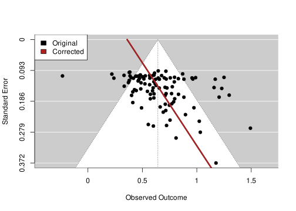
11.17 Correcting PB - Selection Models (SM)
- SM assumes a relationship between the p-value and the probability of publishing
- SM estimate this relationship from available studies and correct the average effect
- The models are complicated (number of parameters) and need a large \(k\)
- They provide a very elegant framework to formalize the publication bias supporting simulations and methods development
11.18 SM - Publication Bias Function
- The publication bias can be formalized using a weight function that assigns a probability to certain study properties (e.g., p-value, sample size, z-score, etc.) representing the likelihood of that study being published.
- The general idea (e.g., Citkowicz & Vevea, 2017) is to use a weighted probability density function (wPDF). In the presence of publication bias, the parameters of the wPDF will be different (i.e., adjusted) compared to unweighted PDF (i.e., assuming no publication bias)
11.19 SM - Publication Bias Function
The random-effect meta-analysis PDF can be written as (e.g., Citkowicz & Vevea, 2017):
\[ f\left(y_i \mid \beta, \tau^2 ; \sigma_i^2\right)=\phi\left(\frac{y_i-\Delta_i}{\sqrt{\sigma_i^2+\tau^2}}\right) / \sqrt{\sigma_i^2+\tau^2}, \]
And adding the weight function:
\[ f\left(Y_i \mid \beta, \tau^2 ; \sigma_i^2\right)=\frac{\mathrm{w}\left(p_i\right) \phi\left(\frac{y_i-\Delta_i}{\sqrt{\sigma_i^2+\tau^2}}\right) / \sqrt{\sigma_i^2+\tau^2}}{\int_{-\infty}^{\infty} \mathrm{w}\left(p_i\right) \phi\left(\frac{Y_i-\Delta_i}{\sqrt{\sigma_i^2+\tau^2}}\right) / \sqrt{\sigma_i^2+\tau^2} d Y_i} \]
11.20 SM - Publication Bias Function
For example, Citkowicz and Vevea (2017) proposed a model using a weight function based on the Beta distribution with two parameters \(a\) and \(b\)5 \(w(p_i) = p_i^{a - 1} \times (1 - p_i)^{b - 1}\):
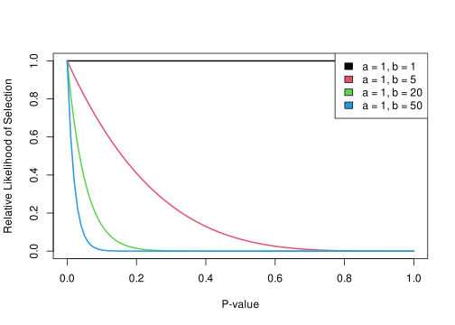
11.21 Selection Models
In R we can use the metafor::selmodel() function to implement several types of models. For example, we can apply the Citkowicz and Vevea (2017) model:
sel_beta <- selmodel(fit, type = "beta")
Random-Effects Model (k = 100; tau^2 estimator: ML)
tau^2 (estimated amount of total heterogeneity): 0.0689 (SE = 0.0232)
tau (square root of estimated tau^2 value): 0.2625
Test for Heterogeneity:
LRT(df = 1) = 141.6790, p-val < .0001
Model Results:
estimate se zval pval ci.lb ci.ub
0.4486 0.1097 4.0902 <.0001 0.2336 0.6636 ***
Test for Selection Model Parameters:
LRT(df = 2) = 12.3253, p-val = 0.0021
Selection Model Results:
estimate se zval pval ci.lb ci.ub
delta.1 0.7531 0.0752 -3.2813 0.0010 0.6056 0.9006 **
delta.2 0.8812 0.4161 -0.2855 0.7752 0.0656 1.6967
---
Signif. codes: 0 '***' 0.001 '**' 0.01 '*' 0.05 '.' 0.1 ' ' 1plot(sel_beta)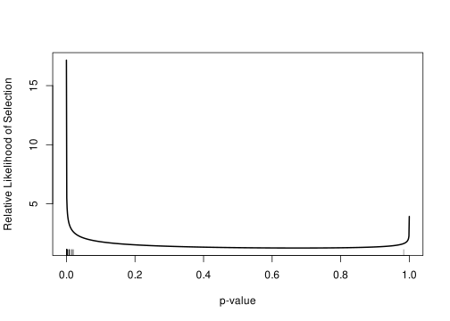
11.22 Selection Models
Let’s try the Beta selection model without publication bias:
11.23 More on SM and Publication Bias
- The SM documentation of
metafor::selmodel()https://wviechtb.github.io/metafor/reference/selmodel.html - Wolfgang Viechtbauer overview of PB https://www.youtube.com/watch?v=ucmOCuyCk-c
- Harrer et al. (2021) - Doing Meta-analysis in R - Chapter 9
- McShane et al. (2016) for a nice introduction about publication bias and SM
- Another good overview by Jin et al. (2015)
- See also Guan & Vandekerckhove (2016), Maier et al. (2023) and Bartoš et al. (2022) for Bayesian approaches to PB
11.24 More on SM and Publication Bias
Assessing, testing, and developing sophisticated models for publication bias is surely important and interesting. But as Wolfgang Viechtbauer (the author of metafor) said:
Hopefully there won’t be a need for these models in the future (Viechtbauer, 2021)
11.25 More on meta-analysis
- the
metaforwebsite contains a lot of materials, examples, tutorials about meta-analysis models - I have an entire workshop on meta-analysis using data simulation https://stat-teaching.github.io/metasimulation/
- The book Doing meta-analysis in R is an amazing resource
11.26 References
see https://www.jepusto.com/simulating-correlated-smds/ for a nice blog post about simulations↩︎
See Harrer et al. (2021) (Chapter 5) and Hedges & Schauer (2019) for an overview about the Q statistics↩︎
see https://www.meta-analysis-workshops.com/download/common-mistakes1.pdf↩︎
Thanks to the Wolfgang Viechtbauer’s course https://www.wvbauer.com/doku.php/course_ma↩︎